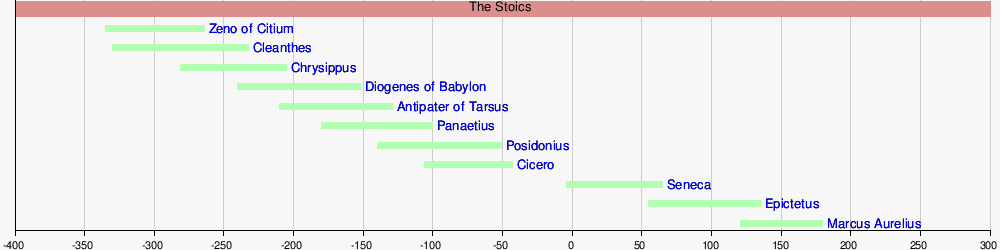

Deskripsi
Stoikisme atau dalam Bahasa Inggris "Stoicism", adalah nama sebuah aliran atau mazhab Filsafat Yunani Kuno yang didirikan di kota Athena, Yunani, oleh Zeno dari Citium pada awal abad ke-3 SM. Mazhab Stoik ini sangat luas dan beragam, tetapi dapat disimpulkan bahwa pijakannya adalah meliputi perkembangan logika (terbagi dalam retorika dan dialektika), fisika, dan etika (memuat teologi dan politik). Pandangan yang mencolok tentang etika adalah bagaimana manusia memilih sikap hidup dengan menekankan apatheia, hidup pasrah atau tawakal menerima keadaannya di dunia. Sikap tersebut merupakan cerminan dari kemampuan nalar manusia, bahkan kemampuan tertinggi dari semua hal.
Secara Terminologi, Stoik berasal dari bahasa Yunani stōïkos, yang berarti "dari stoa (serambi, atau beranda)". Hal ini mengacu pada Stoa Poikile, atau "Beranda Berlukis", di Athena, dimana filsuf stoik Zeno dari Citium yang berpengaruh besar terhadap stoikisme pernah mengajar. Dalam istilah awam stoikisme kadang-kadang disebut sebagai "menderita dalam kesunyian", dan etika yang terkait dengan hal itu.
Tokoh
Semenjak Zeno dari Citium mendirikan aliran Stoikismenya, muncul beberapa filsuf lainnya yang menjadi tokoh Stoa, misalnya Chrisippus dari Soli, Cleanthes dari Assos, Seneca Muda, Cicero, Epictetus, dan Marcus Aurelius. Dalam Kamus Filsafat Cambridge, tokoh dan pandangan Stoik dibagi menjadi tiga:
- Stoik Awal, terdiri dari Zeno (334-262SM), Chrisipus (280-206), dan Cleanthes (331-232).
- Stoik Perantara (Middle Stoicsm), dikembangkan oleh Panaetius (185-110 SM) dan Posidonius (135-50 SM) dari Rhodes, yang mempengaruhi Cicero (106 SM -43 M).
- Stoik Akhir Stoik Romawi (Roman Stoicsm) terdapat Cicero (106 SM -43 M), Seneca Muda (1-65M), Epictetus (55-135M), dan Marcus Aurelius (121-180M).

Rupanya Zeno muda telah terinspirasi oleh ajaran etika Socrates, khususnya keberanian Socrates dalam menempuh jalan kematian dengan sukarela. Tindakan ini seolah menjadi gambaran ajaran Stoik dalam etika, bahwa seseorang tidak perlu terbawa emosi negatif (pathos), takut misalnya, tetapi bahagia dengan kemerdekaan penuh, termasuk menerima cara kematian. Prinsip dan ajaran Stoikisme banyak mempengaruhi pemikiran para teolog Kristen dan filsuf di sepanjang abad, bahkan hingga saat sekarang, dan warisan yang menyolok dari filsafat Stoikisme adalah tentang hidup etis dengan moralitas yang baik, seperti diwarisi oleh beberapa pemikir, yaitu Baruch Spinoza, Joseph Butler, Immanuel Kant, dan Helmut Richard Niebuhr. Menurut filsuf Jerman bernama Dilthey, Stoikisme adalah filsafat terkuat dan terlama yang dapat diterima ketimbang filsafat lainnya.
Tokoh-tokoh etika modern yang terkenal dari Amerika dan sangat dipengaruhi oleh cara berpikir Stoik misalnya H. Richard Niebuhr. Selain Niebuhr membangun diskursus etika yang sangat radikal mengakui peran Ilahi dalam berbagai peristiwa kehidupan dunia yang tampak dalam salah satu karyanya berjudul "Radical Monotheism", Niebuhr juga sangat menekankan tindakan manusia untuk tidak secara dikotomis memisahkan unsur-unsur alam secara bertentangan, yang kemudian hanya akan melahirkan permusuhan antar manusia. Niebuhr mengajak manusia menyelaraskan diri terhadap perubahan-perubahan dalam masyarakat dengan tidak panik, tidak melakukan perlawanan yang menghasilkan kekerasan, melainkan mengajak manusia bertindak bertanggungjawab mulai dari diri sendiri.
Ajaran
Inti-inti Ajaran Stoikisme
Orang-orang Stoik percaya bahwa emosi negatif yang menghancurkan manusia dihasilkan dari keputusan yang salah, dan bahwa seorang sophis, yaitu orang yang memiliki "kesempurnaan moral dan intelektual," tidak akan pernah mengalami emosi-emosi yang merusak kebahagiaan, misalnya marah berlebihan, panik berlebihan, sedih berlebihan, dsb. Seorang Stoik, seperti kata Epictetus hendaknya tidak banyak bicara tentang ide-ide besar, apalagi kepada orang-orang awam, melainkan bertindak selaras dengan apa yang dipikirkannya tentang kebaikan. Hal ini dibedakan dengan istilah filsuf atau filosof (pecinta kebijaksanaan) yang hanya menyukai ide-ide kebijaksanaan, tetapi biasanya gagal melakukan ide-ide kebijaksanaan itu (sophia).
Stoikisme adalah cara hidup yang menekankan dimensi internal manusia, seorang Stoik dapat hidup bahagia ketika ia tidak terpengaruh oleh hal-hal di luar dirinya. Di mata kaum Stoik, Logos Universal (Sang Ilahi) adalah yang menata alam semesta ini dengan rasional, senegatif apa pun kejadian yang menimpa, seorang Stoik yang bijak akan melihat kejadian tersebut sebagai bagian dari tenunan indah iahi atau Logos. Ia akan menyesuaikan kodrat rasional dirinya sebagai manusia dengan hukum alam (hukum sebab akibat) dari Alam Semesta. Landasan ajaran Stoik meminjam tiga elemen filsafat yang berkembang di Akademia yang didirikan oleh Aristoteles yakni logika atau rasio, materi atau fisika, dan etika. Tema-tema yang sering dibicarakan terkait dimensi manusia sebagai fokus utama, di antaranya mengenai takdir, kehendak bebas, pemeliharaan Ilahi, dan kejahatan.
Etika Stoikisme
Etika Stoikisme berpijak pada prinsip bahwa kebajikanlah (virtue) yang baik, selain hal itu, buruk adanya. Hal-hal lain sifatnya netral saja (Inggris: indifferent, Yunani: adiaphora), walaupun beberapa di antaranya, misalnya kesehatan, kemakmuran, kehormatan secara alamiah dianjurkan, sedangkan yang berseberangan dari itu tidak dianjurkan. Misalnya, kepemilikan pribadi sama sekali tidak dianjurkan karena tidak selaras dengan prinsip manusia yang ingin bahagia. Jika manusia tidak sadar terhadap godaan hal-hal yang netral itu, ia dapat terjebak pada tindakan menghalalkan cara untuk mencapai hal-hal yang netral, atau ia justru tidak bahagia ketika diperalat hal-hal yang netral itu. Misalnya, seseorang yang mengejar harta benda terus menerus, sesungguhnya ia tak lagi dapat bahagia, karena dirinya telah dikuasai hal-hal yang seharusnya tidak merintanginya untuk berbahagia. Pertarungan paling sengit adalah mengenai kebijaksanaan dan pengendalian diri manusia melawan kesenangan pribadi.
Selain Stoik menolak pengaruh hal-hal yang bersifat eksternal (kekayaan, kesehatan, reputasi), Stoik juga menolak pengaruh hal-hal yang membengkokkan nalar, misalnya takut terhadap kematian, takut kepa Dewa atau Tuhan, dan peristiwa-peristiwa buruk yang akan mengganggu kebahagiaan. Caranya adalah, bukan memutus hubungan terhadap hal-hal yang menakutkan itu, melainkan dengan meluruskan nalar kita supaya tidak dikendalikan oleh emosi-emosi yang muncul dari hal-hal itu. Kebahagiaan tidak dapat direnggut oleh peristiwa-peristiwa tersebut, walaupun kita tidak dapat mengendalikan semua peristiwa di tangan kita. Dengan memperbaiki nalar, kita mampu mengendalikan perilaku kita dalam menghadapinya. Ketakutan ketika menghadapi peristiwa-peristiwa yang tidak kita harapkan sebenarnya lebih besar daripada akibat-akibat menakutkan yang akan ditimbulkan peristiwa-peristiwa itu sendiri.
Cardinal Virtues
Cardinal Virtues adalah empat prinsip kebajikan yang umum terdapat dalam ajaran Stoik. Yakni: Prudence, Justice, Fortitude, dan Temperance. Prinsip tersebut membentuk sebuah teori etika. Istilah "Cardinal" memiliki arti utama, sedangkan "Virtue" berarti kebajikan.
- Prudence (berarti Kebijaksanaan), adalah kemampuan untuk mengambil suatu tindakan yang tepat dalam sebuah situasi serta pada saat yang tepat.
- Justice (berarti Keadilan), adalah kemampuan untuk menerapkan keadilan dalam setiap tindakan.
- Fortitude (berarti Ketabahan), adalah kemampuan untuk menghadapi cobaan, kesakitan, penderitaan dengan tabah tanpa mengeluh.
- Temperance (berarti Penahanan), adalah kemampuan untuk menahan diri dalam melakukan hal-hal yang menarik hawa nafsu.